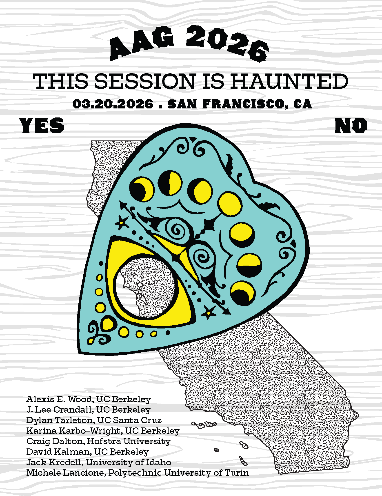

Audience Participation
Do you have a local legend that you'd like to share? What about an eerie experience you simply can't "rationally" explain? What does the "unknown" tell you about place - could be where you are from, or somewhere you have visited? From whom and where did you hear this story and how did it make you feel? Perhaps you have had a strange encounter, an unexplainable experience, a haunting, a time-slip, an otherworldly sensation. Share your story with us, as brief as 1 minute, up to 15 minutes audio recording.Instructions
1) Please begin with your name (can be a pseudonym) and where you're calling in from.
2) Submission of a story implies consent to share on a future map and/or Berkeley Space Station radio program, unless you expressly state otherwise.
Alternatively, we will accept written stories - and photos - (no minimum length, maximum 2,000 words) via email at: thissessionishaunted@gmail.com
Hear a Sample Story
Session Description
Gather round, geographers of the strange and scholars of the spectral — this session is calling your name (perhaps from beyond the archive). We invite you to join our séance as we summon the "local legend" to the discussion table. What does the "local legend" mean for geography, both as a (folkloric) archival method and an object of study? What spatial formations and boundaries are transcended and which are reinforced through stories of monsters, ghosts, cryptids, and other un/hyper-earthly beings? How might these figures illuminate the tangled relations among capitalism, technology, and affective attachments to space and multispecies life, particularly through the lenses of race, class, gender, and sexuality? In the spirit of Gothic Marxism, we invite reflections on the "metaphysical subtleties and theological niceties" that animate material life under capital – those moments when, as Marx writes, "the table stands on its head and begins to dance." What other objects, myth, and spaces perform this uncanny choreography? How might the monstrous, the folkloric, and the "fictive" turn the tables on geographic practice? We're especially interested in mythic beings and sites that linger in both folklore and fiction-novels, films, video games, or other media-where taboo, desire, and spatial imagination converge.About the Project
This project is inspired by but diverges from late-night paranormal radio broadcasts like Art Bell's Coast-to-Coast AM, and a range of others in the Charles Fortean tradition (some of our favorites include Jim Harold's Campfire, Astonishing Legends, Spooked, American Hysteria). We are particularly interested in what the unknown can reveal about the geographic - space, politics, place, culture, technology, kinship, and multispecies (multidimensional?) relations. Some stories will be featured on a spot on Berkeley Space Station, a radio station hosted by the Geography Department at UC Berkeley. Others may feature in a visual representation / haunted map.
About the Organizers
J. Lee Crandall (they/them) is a PhD Student in the Department of Geography at UC Berkeley. Lee is a licensed architect who has practiced for over 10 years in NYC and Puerto Rico. Since 2012 they have been researching new tech cities, technoeconomic development, and the reconfiguration of nature, land, and (multispecies) lives under crypto/tech imaginaries and politics. Outside of academic work, they enjoy playing video games, reading and writing speculative fiction, and making things with their hands.
Alexis E. Wood (she/her) is a PhD Student at the Department of Geography and the Berkeley Center for New Media, researching the growing intersections between climate change, digital geographies, and rural socio-political movements. She is particularly interested in secessionist state movements and mapping the felt, imagined, and ephemeral.

This Session is Haunted: Session A
This Session is Haunted: Session B